mi_vector = c(1, 2, 3) # Vector inicial
mi_vector = append(mi_vector, c(4, 5)) # Agrega los números 4 y 5 al final
mi_vector[1] 1 2 3 4 5Los vectores son estructuras básicas en R que almacenan datos del mismo tipo.
Funciones comunes
append: Agrega elementos al final de un vector. Utiliza esta función para añadir uno o más elementos a un vector existente.mi_vector = c(1, 2, 3) # Vector inicial
mi_vector = append(mi_vector, c(4, 5)) # Agrega los números 4 y 5 al final
mi_vector[1] 1 2 3 4 5c: Combina valores para crear un vector. Es la forma más sencilla de crear un vector.mi_vector = c(1, 2, 3, 4, 5) # Combina los valores 1, 2, 3, 4 y 5 en un vector
mi_vector[1] 1 2 3 4 5diff: Calcula las diferencias entre elementos consecutivos. Devuelve un nuevo vector con la diferencia entre cada par de elementos consecutivos.mi_vector = c(1, 2, 4, 8, 16, 32)
diff(mi_vector)[1] 1 2 4 8 16length: Obtiene la longitud de un vector. Te permite conocer cuántos elementos contiene el vector.mi_vector = c(1, 2, 3, 4, 5, 6)
length(mi_vector)[1] 6rev: Invierte el orden de los elementos de un vector. Útil si necesitas trabajar con los elementos en orden inverso.mi_vector = c(1, 2, 3, 4, 5)
rev(mi_vector)[1] 5 4 3 2 1seq: Genera una secuencia de números. Permite definir el número inicial (from), el número final (to) y el tamaño del paso (by).seq(from = 0, to = 50, by = 5) [1] 0 5 10 15 20 25 30 35 40 45 50sort: Ordena un vector. Puedes ordenar un vector en orden ascendente (por defecto) o descendente utilizando el argumento decreasing.mi_vector = c(3, 1, 4, 2, 5)
sort(mi_vector) # Orden ascendente[1] 1 2 3 4 5sort(mi_vector, decreasing = TRUE) # Orden descendente[1] 5 4 3 2 1unique: Devuelve los valores únicos de un vector. Elimina duplicados y muestra solo los valores distintos.mi_vector = c(1, 1, 2, 3, 3, 4)
unique(mi_vector)[1] 1 2 3 4Operaciones útiles
c.vector1 = c(1, 2, 3)
vector2 = c(4, 5)
c(vector1, vector2)[1] 1 2 3 4 5rep para repetir elementos de un vector. Hay dos opciones principales:times: Repite toda la secuencia el número de veces indicado.each: Repite cada elemento de la secuencia el número de veces indicado.rep(1:3, times = 2) # Repite la secuencia completa 1, 2, 3 dos veces[1] 1 2 3 1 2 3rep(1:3, each = 2) # Repite cada elemento (1, 2, 3) dos veces[1] 1 1 2 2 3 3sample para obtener valores aleatorios de un vector.size: Especifica cuántos valores quieres seleccionar.replace: Indica si los valores pueden repetirse (TRUE) o no (FALSE).sample(1:10, size = 5) # Selecciona 5 números aleatorios del 1 al 10[1] 3 6 5 10 2sample(1:10, size = 5, replace = TRUE) # Permite que los valores se repitan[1] 3 10 6 4 5vector1 = c(1, 2, 3)
vector2 = c(4, 5, 6)
vector1 + vector2 [1] 5 7 9vector1 = c(2, 4, 6)
vector2 = c(1, 3, 5)
vector1 * vector2 [1] 2 12 30TRUE o FALSE) para cada elemento. Además, puedes:sum().[].mi_vector = c(10, 20, 30, 40, 50)
# ¿Cuáles elementos son mayores a 25?
mi_vector > 25 [1] FALSE FALSE TRUE TRUE TRUE# ¿Cuántos elementos son mayores a 25?
sum(mi_vector > 25) [1] 3# Seleccionar elementos mayores a 25
mi_vector[mi_vector > 25] [1] 30 40 50Los data frames son estructuras de datos bidimensionales en R, similares a tablas, donde cada columna puede contener un tipo diferente de datos (numéricos, caracteres, etc.).
Creación y visualización
data.frame() para crear un data frame combinando vectores como columnas.mi_dataframe = data.frame(
Nombre = c("Ana", "Luis", "Pedro", "Marco", "Fernanda", "Felix", "Diego"),
Edad = c(23, 36, 35, 27, 34, 24, 41),
Ciudad = c("Ica", "Huaraz", "Cusco", "Cusco", "Lima", "Iquitos", "Huaraz")
)
mi_dataframe Nombre Edad Ciudad
1 Ana 23 Ica
2 Luis 36 Huaraz
3 Pedro 35 Cusco
4 Marco 27 Cusco
5 Fernanda 34 Lima
6 Felix 24 Iquitos
7 Diego 41 Huarazhead(): Muestra las primeras filas (por defecto 6).tail(): Muestra las últimas filas (por defecto 6).head(mi_dataframe) Nombre Edad Ciudad
1 Ana 23 Ica
2 Luis 36 Huaraz
3 Pedro 35 Cusco
4 Marco 27 Cusco
5 Fernanda 34 Lima
6 Felix 24 Iquitostail(mi_dataframe, 2) Nombre Edad Ciudad
6 Felix 24 Iquitos
7 Diego 41 Huarazstr(): Muestra la estructura del data frame.summary(): Proporciona estadísticas descriptivas básicas para cada columna.str(mi_dataframe)'data.frame': 7 obs. of 3 variables:
$ Nombre: chr "Ana" "Luis" "Pedro" "Marco" ...
$ Edad : num 23 36 35 27 34 24 41
$ Ciudad: chr "Ica" "Huaraz" "Cusco" "Cusco" ...summary(mi_dataframe) Nombre Edad Ciudad
Length:7 Min. :23.00 Length:7
Class :character 1st Qu.:25.50 Class :character
Mode :character Median :34.00 Mode :character
Mean :31.43
3rd Qu.:35.50
Max. :41.00 Acceso y selección de datos
$ o corchetes ([ ]).mi_dataframe$Nombre # Accede a la columna "Nombre"[1] "Ana" "Luis" "Pedro" "Marco" "Fernanda" "Felix" "Diego" mi_dataframe[["Edad"]] # Otra forma de acceder a la columna "Edad"[1] 23 36 35 27 34 24 41[fila, ]).# Devuelve la segunda fila
mi_dataframe[2, ] Nombre Edad Ciudad
2 Luis 36 Huaraz[fila, columna]).# Devuelve el valor en la fila 2 y columna 3
mi_dataframe[2, 3] # Devuelve el valor en la fila 2 y columna 3[1] "Huaraz"# Selecciona columnas por nombre
mi_dataframe[, c("Nombre", "Ciudad")] Nombre Ciudad
1 Ana Ica
2 Luis Huaraz
3 Pedro Cusco
4 Marco Cusco
5 Fernanda Lima
6 Felix Iquitos
7 Diego Huaraz # Selecciona las primeras dos filas
mi_dataframe[1:2, ] Nombre Edad Ciudad
1 Ana 23 Ica
2 Luis 36 HuarazFiltrado de datos
# Filtra filas donde Edad > 25
mi_dataframe[mi_dataframe$Edad > 25, ] Nombre Edad Ciudad
2 Luis 36 Huaraz
3 Pedro 35 Cusco
4 Marco 27 Cusco
5 Fernanda 34 Lima
7 Diego 41 Huaraz%in% Filtra filas en base a si un valor pertenece a un conjunto.mi_dataframe[mi_dataframe$Ciudad %in% c("Cusco", "Lima"), ] Nombre Edad Ciudad
3 Pedro 35 Cusco
4 Marco 27 Cusco
5 Fernanda 34 LimaEdición y manipulación
# Añade una columna "Salario"
mi_dataframe$Salario = c(1200, 2340, 1300, 2250,
3000, 2600, 1850)
mi_dataframe Nombre Edad Ciudad Salario
1 Ana 23 Ica 1200
2 Luis 36 Huaraz 2340
3 Pedro 35 Cusco 1300
4 Marco 27 Cusco 2250
5 Fernanda 34 Lima 3000
6 Felix 24 Iquitos 2600
7 Diego 41 Huaraz 1850NULL para eliminar una columna.# Elimina la columna "Salario"
mi_dataframe$Salario = NULL
mi_dataframe Nombre Edad Ciudad
1 Ana 23 Ica
2 Luis 36 Huaraz
3 Pedro 35 Cusco
4 Marco 27 Cusco
5 Fernanda 34 Lima
6 Felix 24 Iquitos
7 Diego 41 Huarazcolnames().# Cambia los nombres de las columnas
colnames(mi_dataframe) = c("Nombre", "Edad", "Vivienda")
mi_dataframe Nombre Edad Vivienda
1 Ana 23 Ica
2 Luis 36 Huaraz
3 Pedro 35 Cusco
4 Marco 27 Cusco
5 Fernanda 34 Lima
6 Felix 24 Iquitos
7 Diego 41 Huarazorder() para ordenar las filas según una columna.# Ordena por la columna "Edad"
mi_dataframe = mi_dataframe[order(mi_dataframe$Edad), ]
mi_dataframe Nombre Edad Vivienda
1 Ana 23 Ica
6 Felix 24 Iquitos
4 Marco 27 Cusco
5 Fernanda 34 Lima
3 Pedro 35 Cusco
2 Luis 36 Huaraz
7 Diego 41 Huarazrbind(): Combina data frames por filas.cbind(): Combina data frames por columnas.# Combinar filas
otro_dataframe = data.frame(Nombre = "Oscar", Edad = 28, Vivienda = "Lima")
mi_dataframe = rbind(mi_dataframe, otro_dataframe)
mi_dataframe Nombre Edad Vivienda
1 Ana 23 Ica
6 Felix 24 Iquitos
4 Marco 27 Cusco
5 Fernanda 34 Lima
3 Pedro 35 Cusco
2 Luis 36 Huaraz
7 Diego 41 Huaraz
11 Oscar 28 Lima# Combinar columnas
nueva_columna = data.frame(Salario = c(1200, 2340, 1300, 2250,
3000, 2600, 1850, 2300))
mi_dataframe = cbind(mi_dataframe, nueva_columna)
mi_dataframe Nombre Edad Vivienda Salario
1 Ana 23 Ica 1200
6 Felix 24 Iquitos 2340
4 Marco 27 Cusco 1300
5 Fernanda 34 Lima 2250
3 Pedro 35 Cusco 3000
2 Luis 36 Huaraz 2600
7 Diego 41 Huaraz 1850
11 Oscar 28 Lima 2300# Elimina la segunda fila
mi_dataframe = mi_dataframe[-2, ]
mi_dataframe Nombre Edad Vivienda Salario
1 Ana 23 Ica 1200
4 Marco 27 Cusco 1300
5 Fernanda 34 Lima 2250
3 Pedro 35 Cusco 3000
2 Luis 36 Huaraz 2600
7 Diego 41 Huaraz 1850
11 Oscar 28 Lima 2300Resúmenes y cálculos
unique() para obtener valores únicos en una columna.unique(mi_dataframe$Vivienda)[1] "Ica" "Cusco" "Lima" "Huaraz"nrow() y ncol().# Número de filas
nrow(mi_dataframe) [1] 7# Número de columnas
ncol(mi_dataframe) [1] 4mean(), sum(), min(), max() a columnas numéricas.# Edad promedio
mean(mi_dataframe$Edad) [1] 32# Suma total de las edades
sum(mi_dataframe$Edad) [1] 224table() para crear una tabla de frecuencias.table(mi_dataframe$Vivienda) # Frecuencia de valores en la columna "Ciudad"
Cusco Huaraz Ica Lima
2 2 1 2 A partir de ahora trabajaremos con una encuesta ficticia diseñada para analizar la relación entre edad, ingreso, nivel educativo y satisfacción personal. Contiene información sobre 500 personas.
library(readr)
encuesta = read_csv('glosario.csv')library(tidyverse)La limpieza de datos es un paso fundamental en todo análisis cuantitativo, ya que garantiza la calidad, consistencia y fiabilidad de los resultados. Errores como nombres mal escritos, valores faltantes, codificaciones inconsistentes o estructuras duplicadas pueden distorsionar el análisis y generar conclusiones erróneas. T
Tomaremos como punto de referencia un dataset con múltiples problemas intencionados, el cual servirá como ejemplo para aplicar herramientas como janitor, stringr, naniar y tidyr, de gran ayuda para transformar datos sucios en insumos analíticos ordenados y listos para modelar o visualizar.
df = read_csv('limpieza.csv')head(df, 12)# A tibble: 12 × 9
`Nombre completo` Edad sexo ingreso_mensual region encuesta_fecha puntaje_1
<chr> <dbl> <chr> <dbl> <chr> <chr> <dbl>
1 Ana Perez 29 feme… 1500 lima 2025-04-11 5
2 Sofia_Ramos 31 F 2 Lima 2025-04-11 3
3 mario vargas 23 masc… 1500 Arequ… 2025/04/12 NA
4 CARLOS DIAZ NA F 3000 Cusco 2025/04/10 NA
5 M@rio V@rg@s NA masc… 3000 LIMA 10-04-2025 1
6 ana perez 31 masc… 1.5 Cusco 2025/04/10 3
7 Sofi@ R@mos 23 nan 2 LIMA 10-04-2025 NA
8 ANA PEREZ 23 F 1.5 AREQU… <NA> NA
9 LUIS GÓMEZ 40 F NA lima 2025-04-11 1
10 An@ Perez 29 nan 3000 Arequ… 2025/04/10 5
11 An@ Perez 35 masc… NA LIMA 2025-04-11 3
12 Ana Perez 23 F 2 Lima 2025-04-11 4
# ℹ 2 more variables: puntaje_2 <dbl>, puntaje_3 <dbl>colnames(df)[1] "Nombre completo" "Edad" "sexo" "ingreso_mensual"
[5] "region" "encuesta_fecha" "puntaje_1" "puntaje_2"
[9] "puntaje_3" library(janitor)df = df %>%
clean_names()colnames(df)[1] "nombre_completo" "edad" "sexo" "ingreso_mensual"
[5] "region" "encuesta_fecha" "puntaje_1" "puntaje_2"
[9] "puntaje_3" Los errores tipográficos, los formatos inconsistentes y las codificaciones irregulares son comunes en datos reales, especialmente en variables de texto como nombres o categorías como el sexo.
Limpieza de nombre_completo
Primero, cargamos el paquete stringr, un paquete dedicado a trabajar con cadenas de texto.
library(tidyverse)
library(stringr)Luego, realizamos una transformación paso a paso de la variable nombre_completo para corregir errores comunes, estandarizar escritura y eliminar inconsistencias:
df = df %>%
mutate(
# Paso 1: Pasamos todo a minúsculas para evitar duplicidades por mayúsculas
nombre_completo = str_to_lower(nombre_completo),
# Paso 2: Reemplazamos caracteres con tilde o especiales por sus equivalentes planos
nombre_completo = str_replace_all(nombre_completo, "á", "a"),
nombre_completo = str_replace_all(nombre_completo, "é", "e"),
nombre_completo = str_replace_all(nombre_completo, "í", "i"),
nombre_completo = str_replace_all(nombre_completo, "ó", "o"),
nombre_completo = str_replace_all(nombre_completo, "ú", "u"),
nombre_completo = str_replace_all(nombre_completo, "ñ", "n"),
# Paso 3: Eliminamos símbolos no deseados como @, guiones bajos, espacios múltiples
nombre_completo = str_replace_all(nombre_completo, "@", "a"),
nombre_completo = str_replace_all(nombre_completo, "_", " "),
nombre_completo = str_replace_all(nombre_completo, "[[:space:]]+", " "),
nombre_completo = str_trim(nombre_completo), # elimina espacios al inicio o final
# Paso 4: Correcciones específicas a errores conocidos por observación del dataset
nombre_completo = case_when(
str_detect(nombre_completo, "sofiaramos") ~ "sofia ramos",
str_detect(nombre_completo, "anaperez") ~ "ana perez",
str_detect(nombre_completo, "luciahuerta") ~ "lucia huerta",
str_detect(nombre_completo, "mariovargas") ~ "mario vargas",
str_detect(nombre_completo, "carlosdiaz") ~ "carlos diaz",
str_detect(nombre_completo, "luisgomez") ~ "luis gomez",
TRUE ~ nombre_completo
),
# Paso 5: Finalizamos capitalizando la primera letra de cada palabra
nombre_completo = str_to_title(nombre_completo)
)Con estas transformaciones, se evita que registros iguales aparezcan como diferentes por errores de digitación, acentos o diferencias en capitalización.
Homogeneización de la variable sexo
En variables categóricas como sexo, donde pueden coexistir múltiples formas de referirse a una misma categoría (“masculino”, “m”, “hombre”, etc.), es fundamental normalizar los valores. Aplicamos una transformación similar:
df = df %>%
mutate(
# Paso 1: Todo a minúsculas
sexo = tolower(sexo),
# Paso 2: Reescribimos variantes en etiquetas estándar
sexo = case_when(
sexo %in% c("masculino", "m", "hombre") ~ "masculino",
sexo %in% c("femenino", "f", "mujer") ~ "femenino",
TRUE ~ NA_character_ # valores irreconocibles se dejan como NA
)
)En este punto, la base ya está considerablemente más limpia y lista para ser usada con métodos estadísticos o gráficos.
head(df)# A tibble: 6 × 9
nombre_completo edad sexo ingreso_mensual region encuesta_fecha puntaje_1
<chr> <dbl> <chr> <dbl> <chr> <chr> <dbl>
1 Ana Perez 29 femenino 1500 lima 2025-04-11 5
2 Sofia Ramos 31 femenino 2 Lima 2025-04-11 3
3 Mario Vargas 23 masculi… 1500 Arequ… 2025/04/12 NA
4 Carlos Diaz NA femenino 3000 Cusco 2025/04/10 NA
5 Mario Vargas NA masculi… 3000 LIMA 10-04-2025 1
6 Ana Perez 31 masculi… 1.5 Cusco 2025/04/10 3
# ℹ 2 more variables: puntaje_2 <dbl>, puntaje_3 <dbl>En el análisis de datos reales, lidiar con valores perdidos es inevitable. Ya sea por errores en la recolección, datos incompletos o fallas de ingreso, siempre es necesario diagnosticar y decidir cómo abordarlos.
El paquete naniar facilita la visualización y exploración de patrones de NA en un dataset. Permite entender en qué columnas se concentran los valores faltantes y si hay patrones comunes entre ellos.
library(naniar)Una forma rápida de visualizar cuántos NA hay por variable es:
gg_miss_var(df)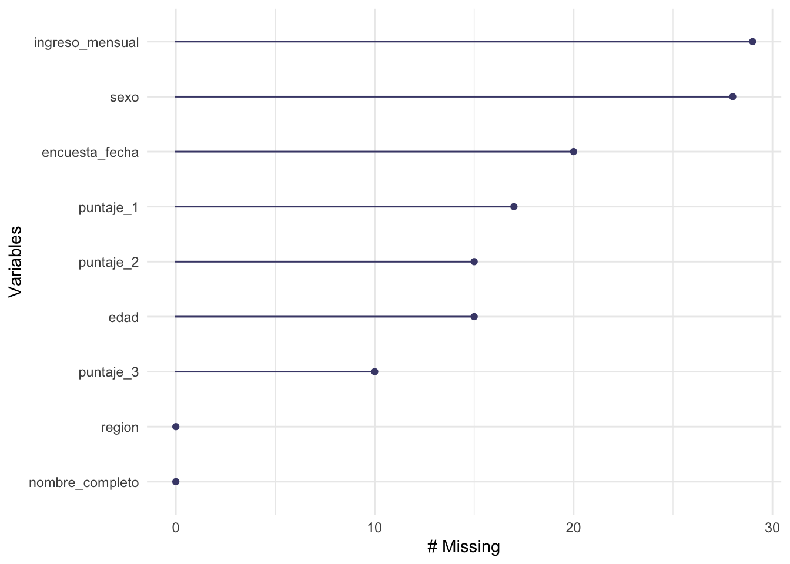
Y si deseamos identificar observaciones con múltiples valores perdidos, usamos:
gg_miss_case(df)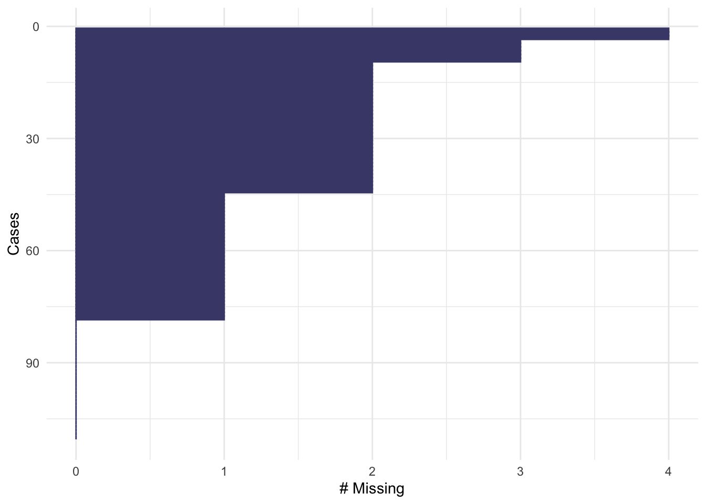
Esto nos ayuda a decidir si queremos eliminar observaciones o columnas con muchos datos ausentes o proceder a imputarlos. A veces basta con eliminar observaciones incompletas si son pocas o si el análisis requiere datos completos. tidyr ofrece funciones útiles como drop_na():
Eliminar observaciones con NA en columnas clave (por ejemplo, nombre o sexo):
df = df %>%
drop_na(nombre_completo, sexo, encuesta_fecha)
dim(df)[1] 67 9Eliminar observaciones con al menos un NA en cualquier columna:
df %>%
drop_na() %>%
dim()[1] 32 9Esto reduce el tamaño de la base pero garantiza integridad completa. Sin embargo, no siempre es deseable perder datos. En esos casos, se puede imputar.
El paquete mice (Multivariate Imputation by Chained Equations) permite realizar una imputación más inteligente, modelando los valores ausentes con base en otras variables.
library(mice)Este paquete nos permite aplicar un algoritmo de imputación. Por ejemplo, para una imputación rápida:
imputado = mice(df, m = 1, method = "pmm", seed = 123)
iter imp variable
1 1 edad ingreso_mensual puntaje_1 puntaje_2 puntaje_3
2 1 edad ingreso_mensual puntaje_1 puntaje_2 puntaje_3
3 1 edad ingreso_mensual puntaje_1 puntaje_2 puntaje_3
4 1 edad ingreso_mensual puntaje_1 puntaje_2 puntaje_3
5 1 edad ingreso_mensual puntaje_1 puntaje_2 puntaje_3m = 1: número de datasets imputados. Se puede aumentar si se desea evaluar incertidumbre.method = "pmm": predictive mean matching, útil para imputar variables numéricas.seed: asegura que los resultados sean reproducibles.Una vez realizado el proceso, se extrae el dataset completo con:
df = complete(imputado)Con esto, se preservan todas las observaciones, pero con los valores faltantes sustituidos por predicciones consistentes con la estructura de los datos. Este método es especialmente útil cuando hay varias variables correlacionadas o cuando perder datos no es una opción que podamos costear.
gg_miss_var(df)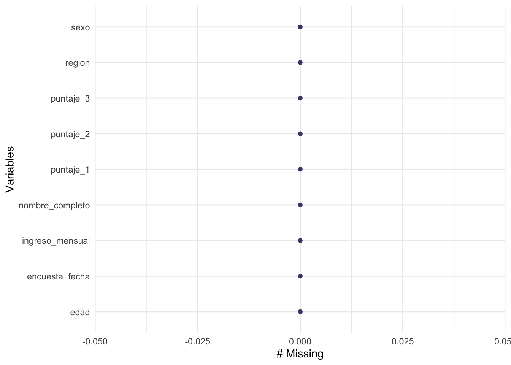
head(df) nombre_completo edad sexo ingreso_mensual region encuesta_fecha
1 Ana Perez 29 femenino 1500.0 lima 2025-04-11
2 Sofia Ramos 31 femenino 2.0 Lima 2025-04-11
3 Mario Vargas 23 masculino 1500.0 Arequipa 2025/04/12
4 Carlos Diaz 23 femenino 3000.0 Cusco 2025/04/10
5 Mario Vargas 29 masculino 3000.0 LIMA 10-04-2025
6 Ana Perez 31 masculino 1.5 Cusco 2025/04/10
puntaje_1 puntaje_2 puntaje_3
1 5 2 2
2 3 3 3
3 3 2 5
4 5 4 1
5 1 4 4
6 3 5 5Los duplicados pueden surgir por errores en la recolección, registros múltiples del mismo individuo o procesos de integración de bases de datos. Si no se detectan y corrigen, pueden sesgar promedios, inflar conteos y distorsionar cualquier análisis posterior.
La forma más directa de detectar duplicados es verificar si existen filas exactamente iguales en todas las columnas:
df %>%
duplicated() %>%
sum()[1] 5Si se desea ver cuáles son esos duplicados exactos:
df %>%
filter(duplicated(.)) nombre_completo edad sexo ingreso_mensual region encuesta_fecha
1 Sofia Ramos 29 femenino 3000.0 LIMA 2025/04/10
2 Carlos Diaz 29 femenino 1500.0 Cuzco 10-04-2025
3 Mario Vargas 31 masculino 1.5 Lima 10-04-2025
4 Mario Vargas 23 masculino 1500.0 Arequipa 2025/04/12
5 Ana Perez 31 masculino 1.5 Cusco 2025/04/10
puntaje_1 puntaje_2 puntaje_3
1 5 2 1
2 5 1 1
3 4 2 2
4 3 2 5
5 3 5 5Podemos eliminarlos con distinct(), que retiene únicamente las filas únicas:
df = df %>%
distinct()Lo que nos deja con:
df %>%
duplicated() %>%
sum()[1] 0Una vez corregidos errores en las variables categóricas y estandarizados los valores faltantes o inconsistentes, es común encontrarse con problemas estructurales. Algunas columnas pueden estar duplicando información, otras pueden combinar múltiples variables en una sola. Aquí es donde entra en juego el paquete tidyr.
Este paquete permite reorganizar los datos sin alterar su contenido: separar, unir, pivotear, rellenar o completar estructuras incompletas. Por ejemplo:
Separar: descomponer nombre_completo en nombre y apellido
library(tidyr)
# Separar nuevamente desde nombre_completo para asegurar consistencia
df = df %>%
separate(nombre_completo, into = c("nombre", "apellido"), sep = " ", extra = "merge", remove = FALSE)sep = " ": se separa por el primer espacio en blanco.extra = "merge": en caso haya más de dos componentes (ej. “Maria del Carmen”), los combina en apellido.remove = FALSE: conservamos la columna original por trazabilidad.head(df) nombre_completo nombre apellido edad sexo ingreso_mensual region
1 Ana Perez Ana Perez 29 femenino 1500.0 lima
2 Sofia Ramos Sofia Ramos 31 femenino 2.0 Lima
3 Mario Vargas Mario Vargas 23 masculino 1500.0 Arequipa
4 Carlos Diaz Carlos Diaz 23 femenino 3000.0 Cusco
5 Mario Vargas Mario Vargas 29 masculino 3000.0 LIMA
6 Ana Perez Ana Perez 31 masculino 1.5 Cusco
encuesta_fecha puntaje_1 puntaje_2 puntaje_3
1 2025-04-11 5 2 2
2 2025-04-11 3 3 3
3 2025/04/12 3 2 5
4 2025/04/10 5 4 1
5 10-04-2025 1 4 4
6 2025/04/10 3 5 5Unir: combinar puntaje_1, puntaje_2 y puntaje_3 en una sola columna
En análisis posteriores puede ser útil pivotear los puntajes para analizar cada respuesta como una fila individual. Esto facilita la creación de gráficos o modelos que trabajen sobre respuestas individuales:
df = df %>%
# Sumamos todas las que empiezan con 'puntaje'
pivot_longer(cols = starts_with("puntaje_"),
names_to = "pregunta",
values_to = "puntaje")Ahora cada persona aparece tres veces (una por pregunta), lo cual permite comparar puntuaciones medias entre preguntas o agrupar por categorías ahora que tenemos la variable categórica pregunta.
Así quedo nuestro dataset luego de la limpieza
head(df, 12)# A tibble: 12 × 10
nombre_completo nombre apellido edad sexo ingreso_mensual region
<chr> <chr> <chr> <dbl> <chr> <dbl> <chr>
1 Ana Perez Ana Perez 29 femenino 1500 lima
2 Ana Perez Ana Perez 29 femenino 1500 lima
3 Ana Perez Ana Perez 29 femenino 1500 lima
4 Sofia Ramos Sofia Ramos 31 femenino 2 Lima
5 Sofia Ramos Sofia Ramos 31 femenino 2 Lima
6 Sofia Ramos Sofia Ramos 31 femenino 2 Lima
7 Mario Vargas Mario Vargas 23 masculino 1500 Arequipa
8 Mario Vargas Mario Vargas 23 masculino 1500 Arequipa
9 Mario Vargas Mario Vargas 23 masculino 1500 Arequipa
10 Carlos Diaz Carlos Diaz 23 femenino 3000 Cusco
11 Carlos Diaz Carlos Diaz 23 femenino 3000 Cusco
12 Carlos Diaz Carlos Diaz 23 femenino 3000 Cusco
# ℹ 3 more variables: encuesta_fecha <chr>, pregunta <chr>, puntaje <dbl>El paquete dplyr es uno de los más utilizados en R para manipulación y transformación de datos. El operador %>% (pipe) es una herramienta central que permite encadenar funciones, pasando el resultado de una función como entrada a la siguiente.
filter: Filtrar filas según una condiciónEsta función selecciona solo las filas que cumplen con una o más condiciones.
# Filtrar encuestados mayores de 30 años
encuesta %>%
filter(Edad > 30) %>%
head(10)# A tibble: 10 × 6
ID Edad Genero Ingreso Educacion Satisfaccion
<dbl> <dbl> <chr> <dbl> <chr> <dbl>
1 2 33 M 2595 Secundaria 3
2 3 51 F 3806 Secundaria 3
3 4 36 M 2907 Universitaria 3
4 5 36 M 2707 Secundaria 4
5 6 52 F 3540 Universitaria 5
6 7 40 M 3506 Secundaria 4
7 10 31 F 2452 Secundaria 3
8 11 47 F 3620 Universitaria 3
9 12 39 F 3258 Universitaria 2
10 13 39 F 3258 Universitaria 4# Filtrar mujeres con educación universitaria
encuesta %>%
filter(Genero == "F", Educacion == "Universitaria") %>%
head(10)# A tibble: 10 × 6
ID Edad Genero Ingreso Educacion Satisfaccion
<dbl> <dbl> <chr> <dbl> <chr> <dbl>
1 6 52 F 3540 Universitaria 5
2 11 47 F 3620 Universitaria 3
3 12 39 F 3258 Universitaria 2
4 13 39 F 3258 Universitaria 4
5 20 30 F 3244 Universitaria 3
6 24 28 F 1591 Universitaria 2
7 28 37 F 2711 Universitaria 2
8 37 41 F 3449 Universitaria 3
9 47 31 F 2744 Universitaria 3
10 58 41 F 4131 Universitaria 3select: Seleccionar columnas específicasEsta función te permite elegir las columnas necesarias.
# Seleccionar columnas relevantes
encuesta %>%
select(ID, Genero, Satisfaccion) %>%
head(10)# A tibble: 10 × 3
ID Genero Satisfaccion
<dbl> <chr> <dbl>
1 1 F 3
2 2 M 3
3 3 F 3
4 4 M 3
5 5 M 4
6 6 F 5
7 7 M 4
8 8 F 2
9 9 F 3
10 10 F 3mutate: Crear o modificar columnasAñade nuevas columnas o modifica las existentes.
# Crear una columna que clasifique a las personas como "Joven" o "Adulto"
encuesta %>%
# Personas menores o iguales a 30 como "Jovenes"
mutate(RangoEdad =
ifelse(Edad <= 30, "Joven", "Adulto")) %>%
head(10)# A tibble: 10 × 7
ID Edad Genero Ingreso Educacion Satisfaccion RangoEdad
<dbl> <dbl> <chr> <dbl> <chr> <dbl> <chr>
1 1 29 F 3219 Primaria 3 Joven
2 2 33 M 2595 Secundaria 3 Adulto
3 3 51 F 3806 Secundaria 3 Adulto
4 4 36 M 2907 Universitaria 3 Adulto
5 5 36 M 2707 Secundaria 4 Adulto
6 6 52 F 3540 Universitaria 5 Adulto
7 7 40 M 3506 Secundaria 4 Adulto
8 8 22 F 1999 Secundaria 2 Joven
9 9 28 F 1381 Primaria 3 Joven
10 10 31 F 2452 Secundaria 3 Adulto arrange: Ordenar filasOrdena las filas del data frame según una o más columnas.
# Ordenar por edad de menor a mayor
encuesta %>%
arrange(Edad) %>%
head(10)# A tibble: 10 × 6
ID Edad Genero Ingreso Educacion Satisfaccion
<dbl> <dbl> <chr> <dbl> <chr> <dbl>
1 18 18 M 1788 Secundaria 3
2 26 18 F 2839 Primaria 3
3 72 18 M 2271 Secundaria 2
4 108 18 M 1725 Universitaria 3
5 135 18 M 2171 Universitaria 2
6 268 18 M 1269 Universitaria 2
7 281 18 F 1302 Universitaria 2
8 307 18 F 1497 Universitaria 2
9 313 18 M 2458 Secundaria 3
10 336 18 F 1388 Universitaria 3# Ordenar por satisfacción de mayor a menor
encuesta %>%
arrange(desc(Satisfaccion)) %>%
head(10)# A tibble: 10 × 6
ID Edad Genero Ingreso Educacion Satisfaccion
<dbl> <dbl> <chr> <dbl> <chr> <dbl>
1 6 52 F 3540 Universitaria 5
2 44 57 M 4017 Secundaria 5
3 98 50 M 4023 Secundaria 5
4 122 26 F 2372 Universitaria 5
5 128 36 M 3722 Universitaria 5
6 161 46 F 4588 Universitaria 5
7 170 39 M 3747 Universitaria 5
8 212 37 M 4000 Universitaria 5
9 231 55 F 4903 Universitaria 5
10 265 58 M 3794 Secundaria 5# Ordenar primero por género y luego por nivel educativo
encuesta %>%
arrange(Genero, desc(Educacion)) %>%
head(10)# A tibble: 10 × 6
ID Edad Genero Ingreso Educacion Satisfaccion
<dbl> <dbl> <chr> <dbl> <chr> <dbl>
1 6 52 F 3540 Universitaria 5
2 11 47 F 3620 Universitaria 3
3 12 39 F 3258 Universitaria 2
4 13 39 F 3258 Universitaria 4
5 20 30 F 3244 Universitaria 3
6 24 28 F 1591 Universitaria 2
7 28 37 F 2711 Universitaria 2
8 37 41 F 3449 Universitaria 3
9 47 31 F 2744 Universitaria 3
10 58 41 F 4131 Universitaria 3reframe Calcula métricas agregadas como promedios, totales o máximos en devolver cualquier número de filas por grupo.group_by() agrupa los datos según una o más columnas. Esto significa que las filas se organizan en grupos definidos por los valores únicos de las columnas seleccionadas sin modificar el contenido del data framepor si solo.reframe\: Calculamos la satisfacción promedio y el rango de edades por género, reduciendo los datos a una fila por grupo.
# Calcular métricas resumidas por género
encuesta %>%
group_by(Genero) %>% # Agrupar por género
reframe(
# Promedio de satisfacción
SatisfaccionPromedio = mean(Satisfaccion)
) # A tibble: 2 × 2
Genero SatisfaccionPromedio
<chr> <dbl>
1 F 2.90
2 M 2.89reframe con group_by: Agrupar y resumir datos.
# Calcular satisfacción promedio por género
resumen_genero = encuesta %>%
group_by(Genero) %>%
reframe(SatisfaccionPromedio = mean(Satisfaccion))
resumen_genero# A tibble: 2 × 2
Genero SatisfaccionPromedio
<chr> <dbl>
1 F 2.90
2 M 2.89# Calcular edad máxima y mínima por nivel educativo
resumen_educacion = encuesta %>%
group_by(Educacion) %>%
reframe(
EdadMaxima = max(Edad),
EdadMinima = min(Edad)
)
resumen_educacion# A tibble: 3 × 3
Educacion EdadMaxima EdadMinima
<chr> <dbl> <dbl>
1 Primaria 56 18
2 Secundaria 61 18
3 Universitaria 65 18Puedes realizar varias operaciones en una sola secuencia. Por ejemplo:
Filtrar adultos, calcular satisfacción promedio por rango de edad y ordenar resultados.
# Filtrar, agrupar y ordenar
encuesta %>%
# Personas menores o iguales a 30 como "Jovenes"
mutate(RangoEdad =
ifelse(Edad <= 30, "Joven", "Adulto")) %>%
# Agrupar por género
group_by(RangoEdad) %>%
# Calcular métricas resumidas
summarise(
SatisfaccionPromedio = mean(Satisfaccion)) %>%
# Ordenar por satisfacción promedio
arrange(desc(SatisfaccionPromedio)) # A tibble: 2 × 2
RangoEdad SatisfaccionPromedio
<chr> <dbl>
1 Adulto 3.01
2 Joven 2.62Sí, hay varias funciones interesantes en dplyr que podrías agregar a tu apartado para ampliar las capacidades de manipulación de datos. Aquí te dejo algunas funciones adicionales que pueden mejorar el análisis y limpieza de datos:
rename(): Renombrar columnas
Si necesitas cambiar el nombre de una columna, puedes usar rename().
encuesta %>%
rename(Satisfaccion_Gestion = Satisfaccion) %>%
head(3)# A tibble: 3 × 6
ID Edad Genero Ingreso Educacion Satisfaccion_Gestion
<dbl> <dbl> <chr> <dbl> <chr> <dbl>
1 1 29 F 3219 Primaria 3
2 2 33 M 2595 Secundaria 3
3 3 51 F 3806 Secundaria 3relocate(): Reordenar columnas
Si quieres cambiar el orden de las columnas en un data.frame, usa relocate().
encuesta %>%
relocate(Satisfaccion, .before = ID) %>%
head(3)# A tibble: 3 × 6
Satisfaccion ID Edad Genero Ingreso Educacion
<dbl> <dbl> <dbl> <chr> <dbl> <chr>
1 3 1 29 F 3219 Primaria
2 3 2 33 M 2595 Secundaria
3 3 3 51 F 3806 Secundariadistinct(): Eliminar duplicados
Si hay valores duplicados en el data.frame, distinct() los elimina y deja solo las observaciones únicas.
encuesta %>%
distinct() %>%
head(3)# A tibble: 3 × 6
ID Edad Genero Ingreso Educacion Satisfaccion
<dbl> <dbl> <chr> <dbl> <chr> <dbl>
1 1 29 F 3219 Primaria 3
2 2 33 M 2595 Secundaria 3
3 3 51 F 3806 Secundaria 3count(): Contar frecuencias de una variable categórica
Puedes contar la cantidad de observaciones por categoría.
encuesta %>%
count(Educacion)# A tibble: 3 × 2
Educacion n
<chr> <int>
1 Primaria 100
2 Secundaria 152
3 Universitaria 248slice(): Seleccionar filas específicas
Si necesitas extraer ciertas filas según su posición:
# Seleccionar las primeras 3 filas
encuesta %>%
slice(1:3)# A tibble: 3 × 6
ID Edad Genero Ingreso Educacion Satisfaccion
<dbl> <dbl> <chr> <dbl> <chr> <dbl>
1 1 29 F 3219 Primaria 3
2 2 33 M 2595 Secundaria 3
3 3 51 F 3806 Secundaria 3# Seleccionar la fila número 5
encuesta %>%
slice(5)# A tibble: 1 × 6
ID Edad Genero Ingreso Educacion Satisfaccion
<dbl> <dbl> <chr> <dbl> <chr> <dbl>
1 5 36 M 2707 Secundaria 4case_when(): Crear variables con múltiples condiciones
Es una versión más potente de ifelse(), útil cuando tienes muchas condiciones.
# Crear una columna con niveles de satisfacción
encuesta %>%
mutate(Satisfaccion_Categoria = case_when(
Satisfaccion >= 4 ~ "Alta",
Satisfaccion == 3 ~ "Media",
TRUE ~ "Baja"
)) %>%
head(10)# A tibble: 10 × 7
ID Edad Genero Ingreso Educacion Satisfaccion Satisfaccion_Categoria
<dbl> <dbl> <chr> <dbl> <chr> <dbl> <chr>
1 1 29 F 3219 Primaria 3 Media
2 2 33 M 2595 Secundaria 3 Media
3 3 51 F 3806 Secundaria 3 Media
4 4 36 M 2907 Universitaria 3 Media
5 5 36 M 2707 Secundaria 4 Alta
6 6 52 F 3540 Universitaria 5 Alta
7 7 40 M 3506 Secundaria 4 Alta
8 8 22 F 1999 Secundaria 2 Baja
9 9 28 F 1381 Primaria 3 Media
10 10 31 F 2452 Secundaria 3 Media El paquete ggplot2 es una herramienta poderosa para la visualización de datos en R. Se basa en capas (layers), lo que permite personalizar gráficos de manera progresiva.
library(ggplot2)Hay algunos argumentos generales que pueden usarse en la mayoría de gráficos
| Argumento | Descripción |
|---|---|
color |
Color del borde de elementos gráficos |
fill |
Color de relleno en elementos como barras o áreas |
alpha |
Nivel de transparencia (0 a 1) |
size |
Tamaño de puntos, líneas o texto |
shape |
Forma de los puntos (en geom_point()) |
linetype |
Tipo de línea (continua, punteada, etc.) |
stroke |
Grosor del borde en puntos |
geom_point())ggplot(encuesta, aes(x = Edad, y = Ingreso)) +
geom_point(size = 3,
shape = 16,
color = "blue",
alpha = 0.7,
stroke = 1) +
labs(title = "Gráfico de Dispersión",
x = "Edad",
y = "Ingreso") +
theme_minimal()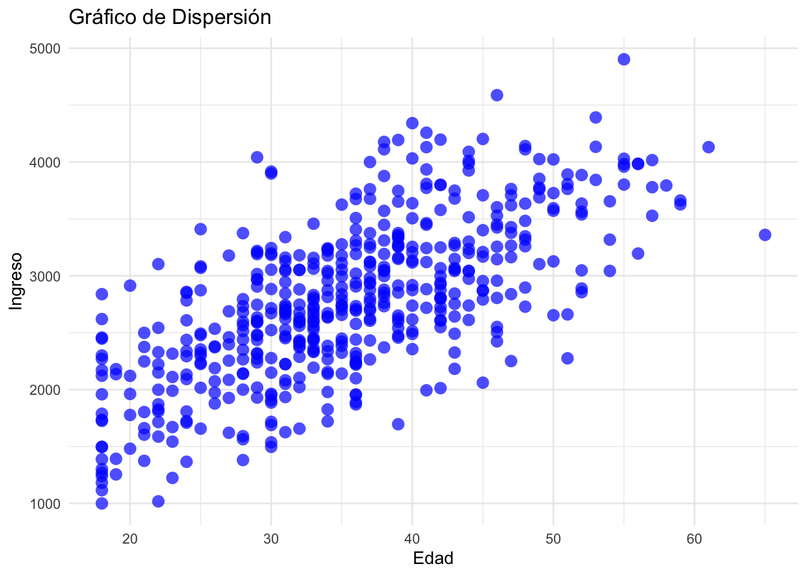
2.Histograma (geom_histogram())
ggplot(encuesta, aes(x = Ingreso)) +
geom_histogram(bins = 10,
fill = "steelblue",
color = "black",
alpha = 0.7,
boundary = 0) +
labs(title = "Histograma de Ingresos",
x = "Ingreso",
y = "Frecuencia") +
theme_minimal()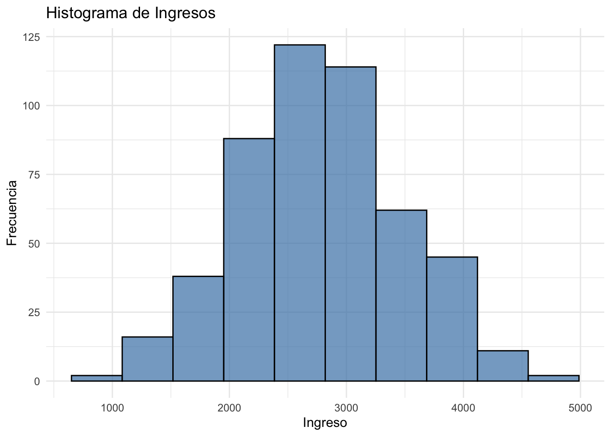
geom_boxplot())ggplot(encuesta, aes(x = Genero,
y = Ingreso,
fill = Genero)) +
geom_boxplot(outlier.color = "darkgreen") +
labs(title = "Boxplot de Ingreso por Género",
x = "Género",
y = "Ingreso") +
theme_minimal()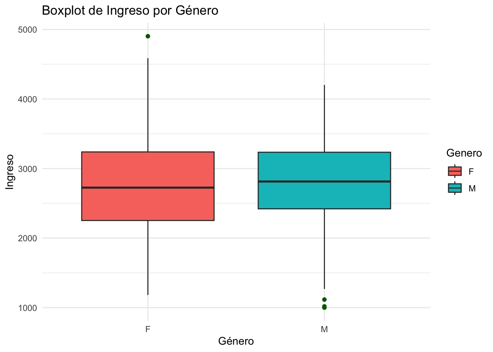
geom_bar())ggplot(encuesta, aes(x = Educacion,
fill = Educacion)) +
geom_bar(width = 0.7,
alpha = 0.8,
color = "black") +
labs(title = "Frecuencia de Nivel Educativo",
x = "Nivel Educativo",
y = "Cantidad",
fill = "Niv. Ed.") +
theme_minimal()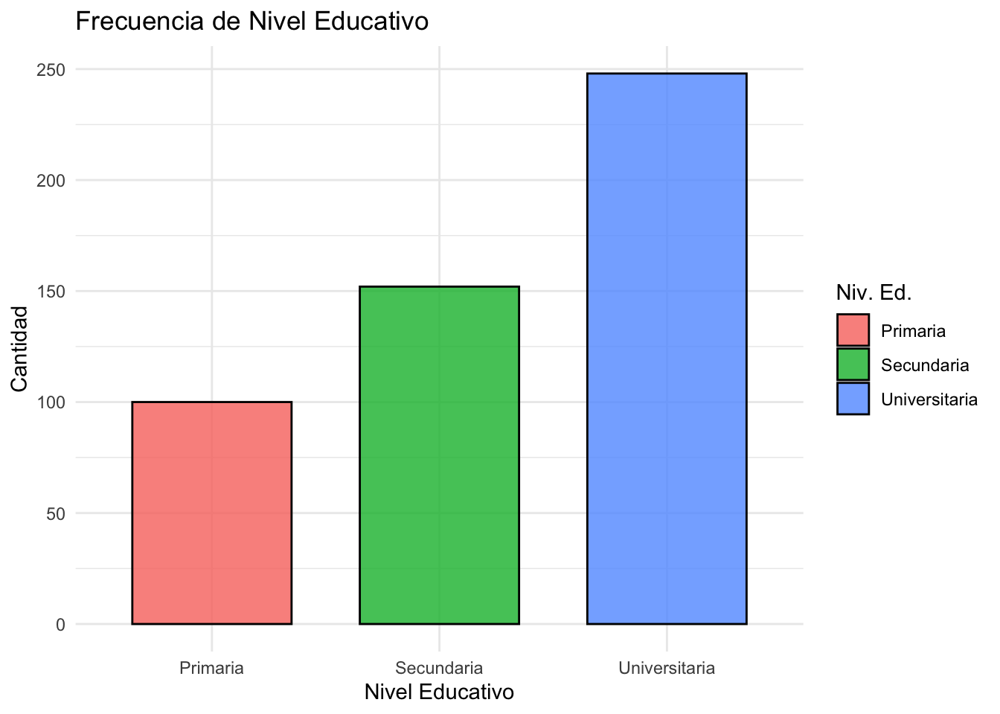
geom_line())set.seed(123)
encuesta %>%
sample_n(20) %>%
ggplot(aes(x = Edad, y = Ingreso)) +
geom_line(color = "blue", size = 1, linetype = "dashed") +
geom_point(size = 3, color = "red") +
labs(title = "Relación Edad vs Ingreso", x = "Edad", y = "Ingreso") +
theme_light()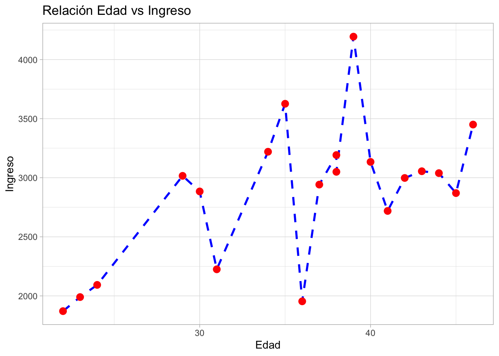
geom_density())ggplot(encuesta, aes(x = Ingreso)) +
geom_density(fill = "lightblue",
alpha = 0.7,
adjust = 1.5,
linetype = "solid") +
labs(title = "Densidad de Ingresos",
x = "Ingreso",
y = "Densidad") +
theme_classic()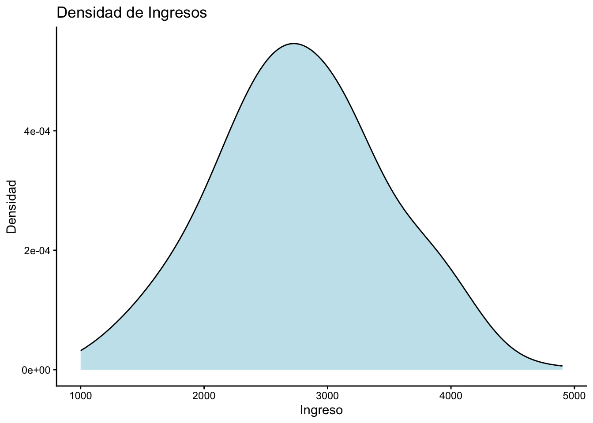
geom_area())ggplot(encuesta, aes(x = Edad,
y = Ingreso)) +
geom_area(fill = "darkgreen",
alpha = 0.5,
linetype = "dotted",
color = "black") +
labs(title = "Área de Relación Edad vs Ingreso",
x = "Edad",
y = "Ingreso") +
theme_classic()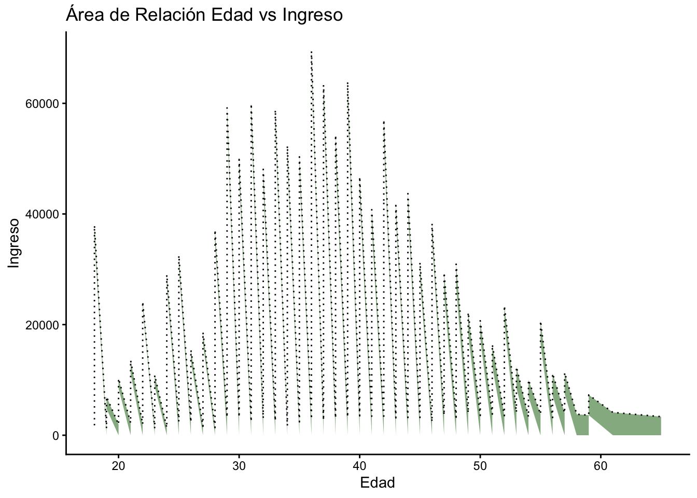
facet_wrap()ggplot(encuesta, aes(x = Ingreso,
fill = Genero)) +
geom_histogram(bins = 10,
alpha = 0.7,
color = 'black') +
facet_wrap(~Genero) +
labs(title = "Histograma de Ingresos por Género") +
theme_minimal()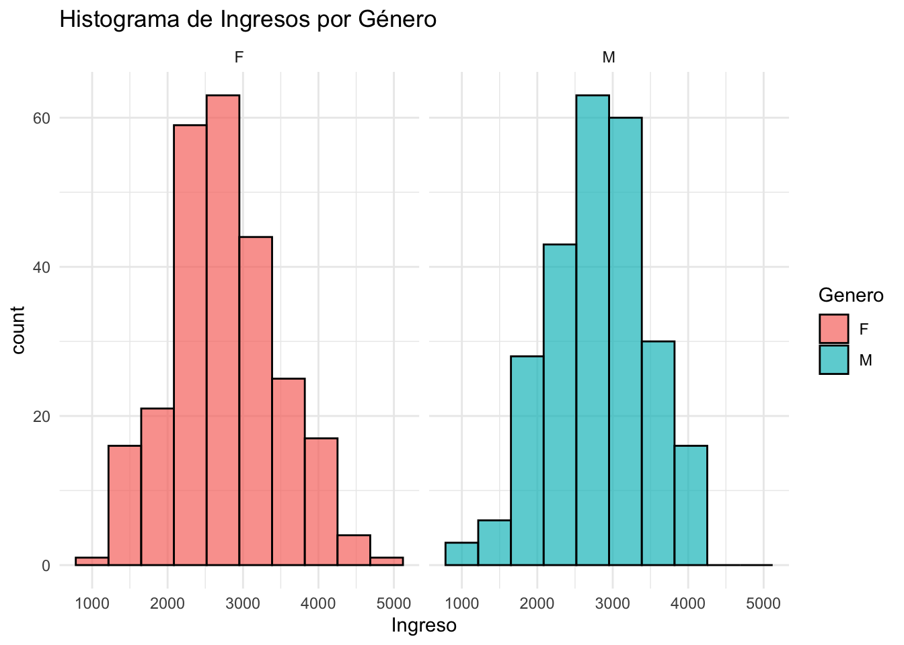
position = "stack")ggplot(encuesta, aes(x = Educacion,
fill = Genero)) +
geom_bar(position = "stack",
alpha = 0.8,
width = 0.7) +
labs(title = "Distribución de Género por Nivel Educativo") +
theme_minimal()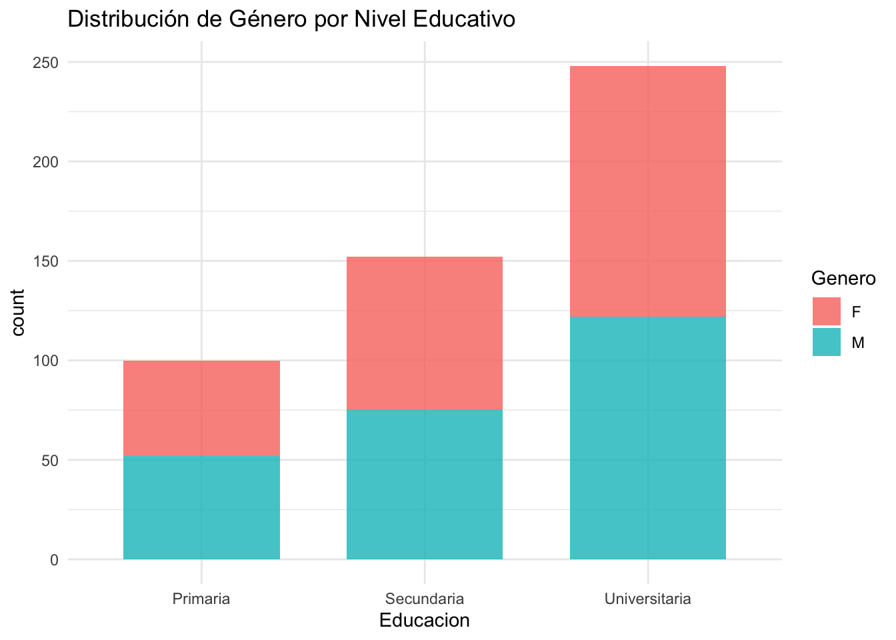
position = "fill")ggplot(encuesta, aes(x = Educacion,
fill = Genero)) +
geom_bar(position = "fill") +
labs(title = "Proporción de Género por Nivel Educativo",
y = "Proporción") +
theme_light()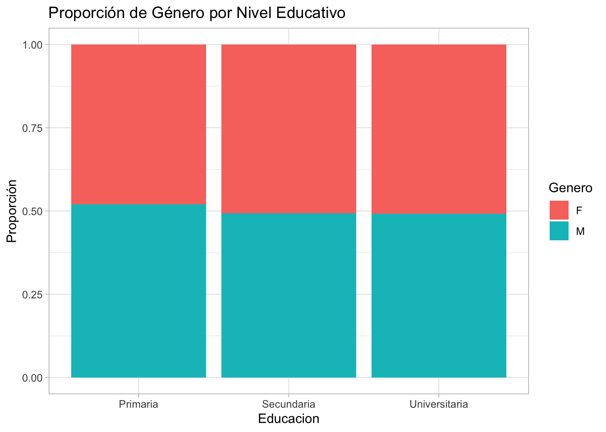
geom_violin())Un gráfico de violín combina un boxplot y una curva de densidad, mostrando la distribución de una variable numérica a lo largo de una categórica. Permite visualizar la mediana, la dispersión y la forma de la distribución.
ggplot(encuesta, aes(x = Genero,
y = Ingreso,
fill = Genero)) +
geom_violin(trim = FALSE,
draw_quantiles = c(0.25, 0.5, 0.75)) +
labs(title = "Distribución del Ingreso por Género",
x = "Género",
y = "Ingreso") +
theme_minimal()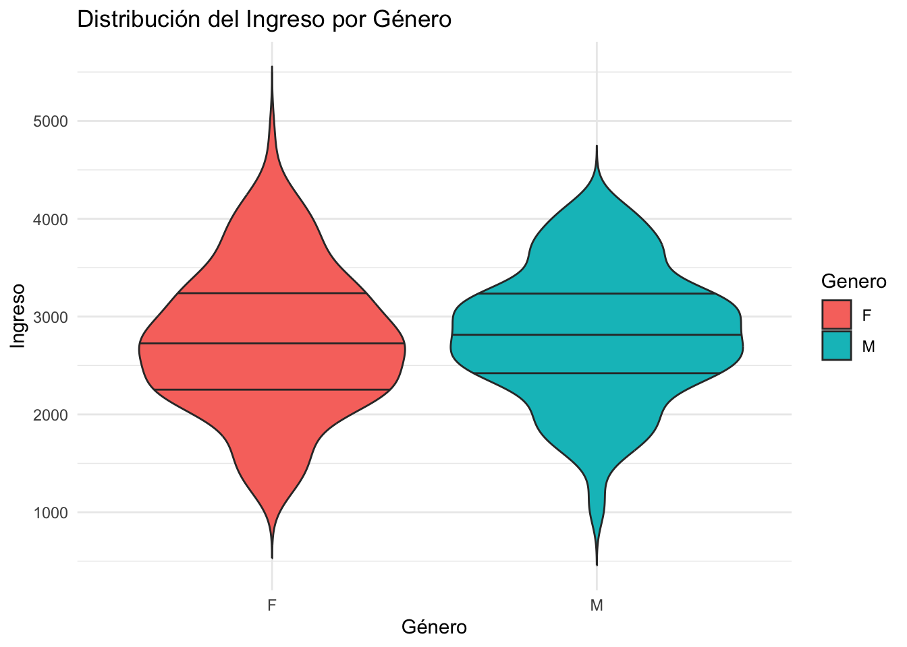
geom_smooth())method = "lm": Usa regresión lineal.se = TRUE: Muestra el intervalo de confianza.set.seed(123)
encuesta %>%
sample_n(50) %>%
ggplot(aes(x = Edad, y = Ingreso)) +
geom_point(size = 3, color = "blue") +
geom_smooth(method = "lm", se = TRUE, color = "red", linetype = "dashed") +
labs(title = "Regresión Lineal de Edad vs Ingreso") +
theme_minimal()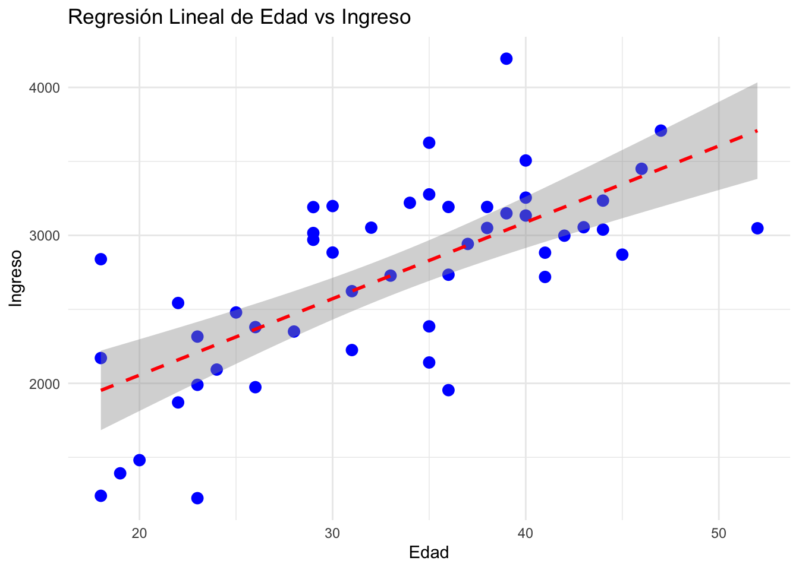
El sistema de visualización de datos en R basado en ggplot2 ofrece una gran flexibilidad y control para generar gráficos informativos. Sin embargo, siempre podemos ir un paso más allá, ya sea para mejorar la estética, destacar información clave o combinar varias visualizaciones. Para ello, existen una serie de paquetes que complementan a ggplot2 y amplían significativamente sus capacidades.
Utilicemos los datos de gapminder filtrados al 2007 como ejemplo:
library(gapminder)
gm_07 = gapminder %>% filter(year == 2007)ggsci(Xiao 2024)Este paquete proporciona paletas de colores inspiradas en publicaciones científicas reconocidas como Nature, JAMA, Lancet, NEJM, entre otras. Es útil cuando se busca una estética profesional y reconocible, especialmente para presentaciones o publicaciones.
La funciones principales son: scale_fill_nejm(), scale_fill_lancet(), scale_fill_jama() permiten aplicar directamente estas paletas en gráficos con fill.
library(ggsci)NJEJM:
ggplot(gm_07, aes(x = continent,
y = lifeExp,
fill = continent)) +
geom_boxplot() +
scale_fill_nejm() +
theme_minimal() +
ggtitle("Boxplot con paleta NEJM")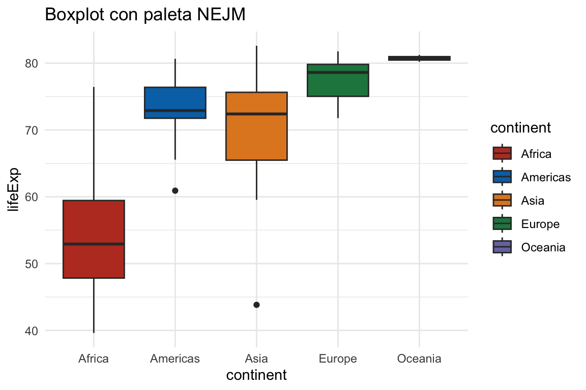
Lancet:
ggplot(gm_07, aes(x = continent,
y = lifeExp,
fill = continent)) +
geom_boxplot() +
scale_fill_lancet() +
theme_minimal() +
ggtitle("Boxplot con paleta Lancet")
JAMA:
ggplot(gm_07, aes(x = continent,
y = lifeExp,
fill = continent)) +
geom_boxplot() +
scale_fill_jama() +
theme_minimal() +
ggtitle("Boxplot con paleta JAMA")
viridisviridis ofrece escalas de color perceptualmente uniformes, es decir, los colores cambian de manera coherente incluso para personas con discapacidad visual o en impresión en blanco y negro. Estas paletas fueron desarrolladas originalmente para Python y se adaptaron a R.
scale_fill_viridis_d() para variables categóricas y scale_fill_viridis_c() para variables continuas.option permite seleccionar entre variantes (“A”, “B”, “C”, “D”, “E”).direction para invertir el orden de los colores.guide = 'none' oculta la leyenda, útil en gráficos facetados.library(viridis)Tema ‘plasma’:
ggplot(gm_07, aes(x = lifeExp,
fill = continent)) +
geom_histogram(binwidth = 3,
color = "black",
alpha = 0.8) +
scale_fill_viridis_d(guide = 'none',
option = 'C') +
facet_wrap(~ continent) +
theme_minimal() +
ggtitle("Histograma de esperanza de vida por continente")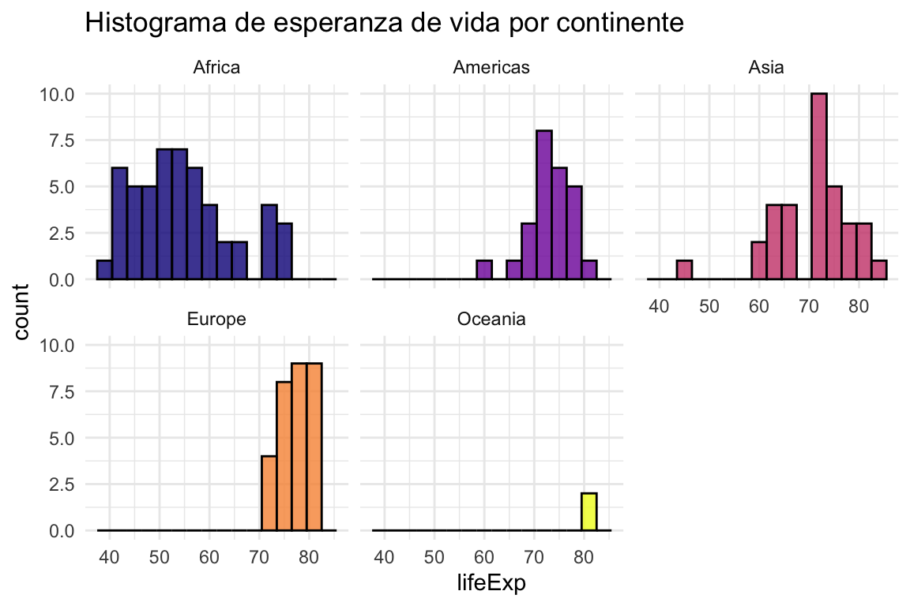
Tema ‘cividis’:
ggplot(gm_07, aes(x = lifeExp,
fill = continent)) +
geom_histogram(binwidth = 3,
color = "black",
alpha = 0.8) +
scale_fill_viridis_d(guide = 'none',
option = 'E') +
facet_wrap(~ continent) +
theme_minimal() +
ggtitle("Histograma de esperanza de vida por continente")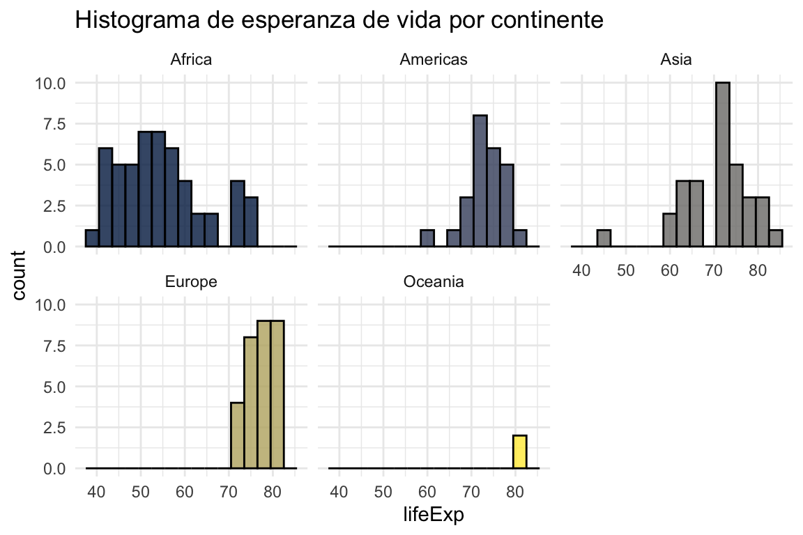
Puede consultar las paletas usando ?scale_fill_viridis
patchwork (Pedersen 2024)Este paquete permite combinar múltiples gráficos generados con ggplot2 de forma intuitiva mediante operadores aritméticos. Es especialmente útil para mostrar comparaciones o construir narrativas visuales. - Los gráficos se combinan con / (vertical), | (horizontal), y + para anotaciones conjuntas. - No requiere transformar los gráficos en objetos de grid. Basta con construir gráficos individuales y luego combinarlos directamente.
library(patchwork)# Boxplot de lifeExp
p1 = ggplot(gm_07, aes(x = lifeExp,
y = '')) +
geom_boxplot(fill = "darkgreen",
width = 0.4) +
theme_minimal() +
labs(title = "Boxplot de esperanza de vida",
x = NULL,
y = "lifeExp")
# Densidad de lifeExp
p2 = ggplot(gm_07, aes(x = lifeExp)) +
geom_density(fill = "darkgreen",
alpha = 0.6) +
theme_minimal() +
labs(title = "Densidad de esperanza de vida",
x = "lifeExp",
y = "Densidad")
# Histograma de lifeExp
p3 = ggplot(gm_07, aes(x = lifeExp)) +
geom_histogram(binwidth = 3,
fill = "darkgreen",
color = "black",
alpha = 0.7) +
theme_minimal() +
labs(title = "Histograma de esperanza de vida",
x = "lifeExp",
y = "Frecuencia")
# Gráficos apilados verticalmente
(p1 / p2 / p3)
ggthemes (Arnold 2024)Proporciona temas visuales inspirados en medios de comunicación como The Economist, Wall Street Journal o FiveThirtyEight. Estos temas cambian fondo, ejes, tipografía y estilo general del gráfico. Son ideales para producir gráficos estilizados sin necesidad de personalizar manualmente cada elemento gráfico.
library(ggthemes)The Economist:
ggplot(gm_07, aes(x = continent,
y = lifeExp,
fill = continent)) +
geom_boxplot() +
theme_economist() +
scale_fill_economist() +
labs(fill = 'Continente') +
ggtitle("Estilo The Economist")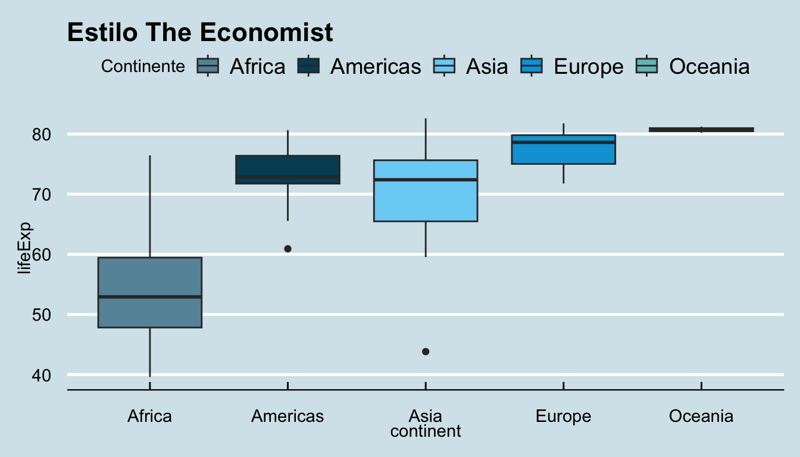
Wall Street Journal:
ggplot(gm_07, aes(x = continent,
y = lifeExp,
fill = continent)) +
geom_boxplot() +
theme_wsj() +
scale_fill_economist() +
labs(fill = 'Continente') +
ggtitle("Estilo Wall Street Journal")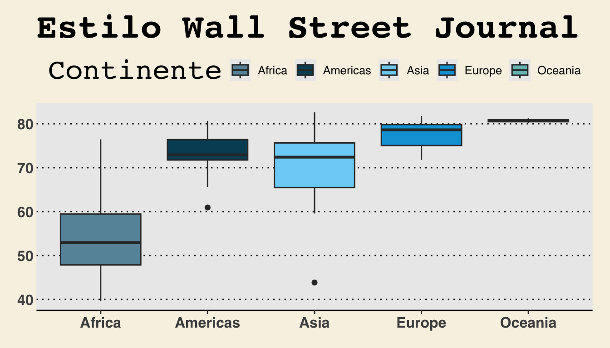
ggtext (Wilke y Wiernik 2022)Este paquete permite utilizar etiquetas enriquecidas con HTML y Markdown dentro de ggplot2. Esto incluye títulos con colores, negritas, saltos de línea y estilos diferenciados por palabra.
element_markdown() reemplaza a element_text() en theme() para permitir etiquetas enriquecidas.ggtitle() o labs() como texto procesable por glue::glue() o expresiones con HTML/Markdown.library(ggtext)Establecemos la relación entre color y continente:
# Colores personalizados para cada continente
colores_continente = c(
Africa = "#E63946",
Americas = "#457B9D",
Asia = "#2A9D8F",
Europe = "#F4A261",
Oceania = "#A17DB2"
)
# Creamos el título con etiquetas coloreadas en HTML
titulo_color = glue::glue(
"Esperanza de vida en 2007 por continente<br>",
"<span style='color:{colores_continente['Africa']}'>**África**</span>, ",
"<span style='color:{colores_continente['Americas']}'>**Américas**</span>, ",
"<span style='color:{colores_continente['Asia']}'>**Asia**</span>, ",
"<span style='color:{colores_continente['Europe']}'>**Europa**</span>, ",
"<span style='color:{colores_continente['Oceania']}'>**Oceanía**</span>"
)Graficamos:
# Gráfico final
ggplot(gm_07, aes(x = continent,
y = lifeExp,
fill = continent)) +
geom_boxplot() +
scale_fill_manual(values = colores_continente) +
labs(y = 'Esperanza de vida') +
theme_minimal() +
theme(
axis.title.x = element_blank(),
axis.text.x = element_blank(),
axis.ticks.x = element_blank(),
plot.title = element_markdown(size = 14,
lineheight = 1.2),
legend.position = "none"
) +
ggtitle(titulo_color)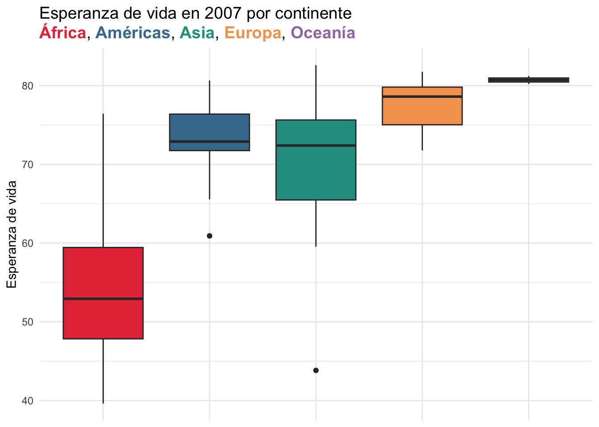
scales (Wickham, Pedersen, y Seidel 2023)Ofrece herramientas para transformar y dar formato a valores numéricos en los ejes o leyendas de ggplot2. Muy útil para mostrar cifras monetarias, porcentajes o unidades más legibles.
dollar_format(), percent_format(), comma_format(), entre otras.prefix o suffix permiten añadir símbolos o unidades y accuracy controla el número de decimales.library(scales)Podemos utilizarlo para monedas:
ggplot(gm_07, aes(x = gdpPercap,
y = lifeExp)) +
geom_point(color = "steelblue",
size = 3,
alpha = 0.8) +
scale_x_continuous(labels = dollar_format(prefix = "US$")) +
theme_minimal() +
ggtitle("Relación entre PIB per cápita y esperanza de vida (USD, 2007)") +
labs(x = "PIB per cápita (US$)",
y = "Esperanza de vida (años)")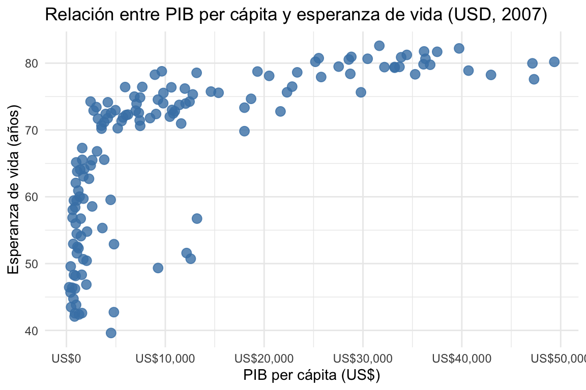
O para porcentajes:
# Clasificamos esperanza de vida
gm_07 = gm_07 %>%
mutate(nivel = cut(lifeExp, breaks = c(0, 60, 75, Inf),
labels = c("Baja", "Media", "Alta")))
# Gráfico debarra horizontal dividida por proporción y continente
ggplot(gm_07, aes(y = continent,
fill = nivel)) +
geom_bar(position = "fill",
color = "black") +
scale_x_continuous(labels = percent_format(accuracy = 1),
trans = "reverse") +
labs(title = "Distribución proporcional de esperanza de vida por continente (2007)",
x = "Porcentaje",
y = NULL,
fill = "Esperanza de vida") +
theme_minimal()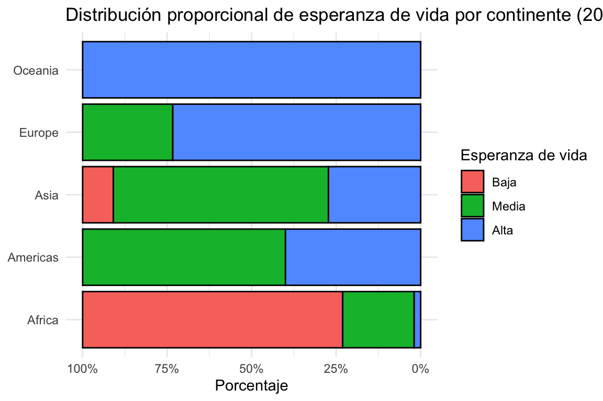
gghighlight (Yutani 2023)Facilita la tarea de destacar subconjuntos de datos directamente en los gráficos sin tener que filtrar manualmente. Ideal para llamar la atención sobre casos atípicos, valores extremos o categorías específicas. - gghighlight() se añade como capa dentro del ggplot y permite condicionar el resaltado a una expresión lógica. - Argumentos útiles: - label_key permite mostrar etiquetas automáticas para los datos resaltados. - use_direct_label = TRUE mejora la legibilidad de gráficos con muchos elementos.
library(gghighlight)ggplot(gm_07, aes(x = log(gdpPercap),
y = lifeExp,
label = country)) +
geom_point(size = 3,
alpha = 0.8) +
gghighlight(lifeExp > 82,
label_key = country) +
theme_minimal() +
ggtitle("Países con esperanza de vida mayor a 82 en 2007")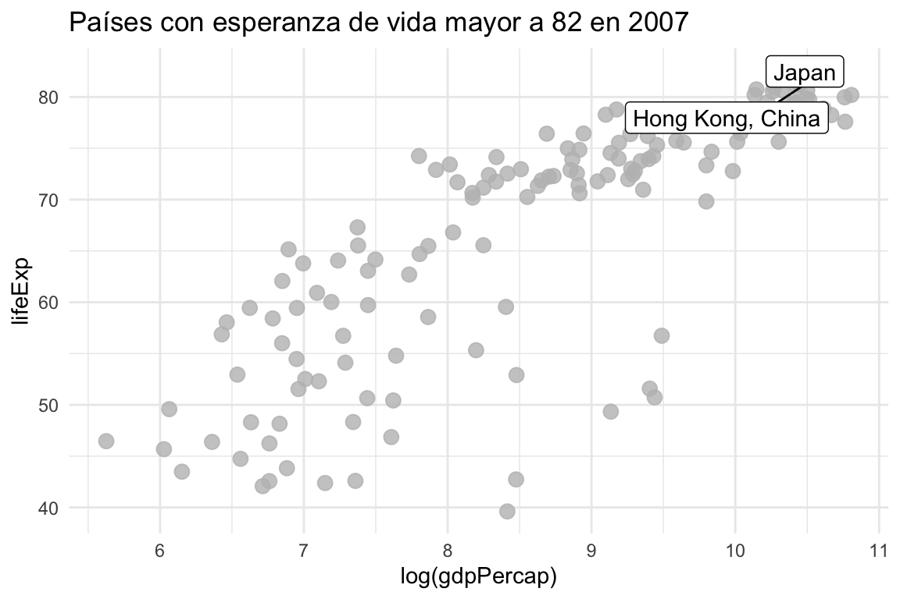
El análisis exploratorio de datos (EDA) es una etapa crucial antes de aplicar cualquier modelo o técnica inferencial. Permite comprender la estructura de los datos, detectar valores atípicos, evaluar supuestos y descubrir patrones relevantes. El paquete dlookr fue diseñado específicamente para facilitar esta etapa.
library(dlookr)dlookrEl paquete dlookr permite realizar diagnósticos detallados sobrela información en cada una de las variables en un data.frame.
Número de observaciones
Cantidad de valores perdidos por variable
Número de valores únicos
Tipo de dato de cada variable
diagnose(encuesta)# A tibble: 6 × 6
variables types missing_count missing_percent unique_count unique_rate
<chr> <chr> <int> <dbl> <int> <dbl>
1 ID numeric 0 0 500 1
2 Edad numeric 0 0 44 0.088
3 Genero character 0 0 2 0.004
4 Ingreso numeric 0 0 451 0.902
5 Educacion character 0 0 3 0.006
6 Satisfaccion numeric 0 0 5 0.01 dlookrPara obtener un resumen detallado de las variables numéricas, usamos diagnose_numeric().
Media, mediana, desviación estándar y varianza
Valores mínimo y máximo
Coeficiente de asimetría (Skewness) y curtosis
Valores atípicos detectados
diagnose_numeric(encuesta)# A tibble: 4 × 10
variables min Q1 mean median Q3 max zero minus outlier
<chr> <dbl> <dbl> <dbl> <dbl> <dbl> <dbl> <int> <int> <int>
1 ID 1 126. 250. 250. 375. 500 0 0 0
2 Edad 18 29 35.5 35 42 65 0 0 1
3 Ingreso 1000 2322. 2785. 2746. 3237. 4903 0 0 1
4 Satisfaccion 1 2 2.89 3 3 5 0 0 15dlookrPara describir las variables categóricas, usamos diagnose_category().
# Diagnóstico de variables categóricas
diagnose_category(encuesta)# A tibble: 5 × 6
variables levels N freq ratio rank
<chr> <chr> <int> <int> <dbl> <int>
1 Genero F 500 251 50.2 1
2 Genero M 500 249 49.8 2
3 Educacion Universitaria 500 248 49.6 1
4 Educacion Secundaria 500 152 30.4 2
5 Educacion Primaria 500 100 20 3Este diagnóstico proporciona:
Frecuencias absolutas y relativas de cada categoría Cantidad de valores únicos en cada variable categórica
Si queremos visualizar mejor la distribución de una variable categórica, podemos utilizar count():
count(encuesta, Educacion)# A tibble: 3 × 2
Educacion n
<chr> <int>
1 Primaria 100
2 Secundaria 152
3 Universitaria 248dlookrdlookr también nos permite detectar valores atípicos en las variables numéricas.
Esto mostrará:
Cuántos valores atípicos existen
Cuáles son esos valores extremos
diagnose_outlier(encuesta)# A tibble: 4 × 6
variables outliers_cnt outliers_ratio outliers_mean with_mean without_mean
<chr> <int> <dbl> <dbl> <dbl> <dbl>
1 ID 0 0 NaN 250. 250.
2 Edad 1 0.2 65 35.5 35.4
3 Ingreso 1 0.2 4903 2785. 2780.
4 Satisfaccion 15 3 5 2.89 2.83dlookr*Podemos graficar la distribución de nuestras variable numérica con plot_hist_numeric().
plot_hist_numeric(encuesta)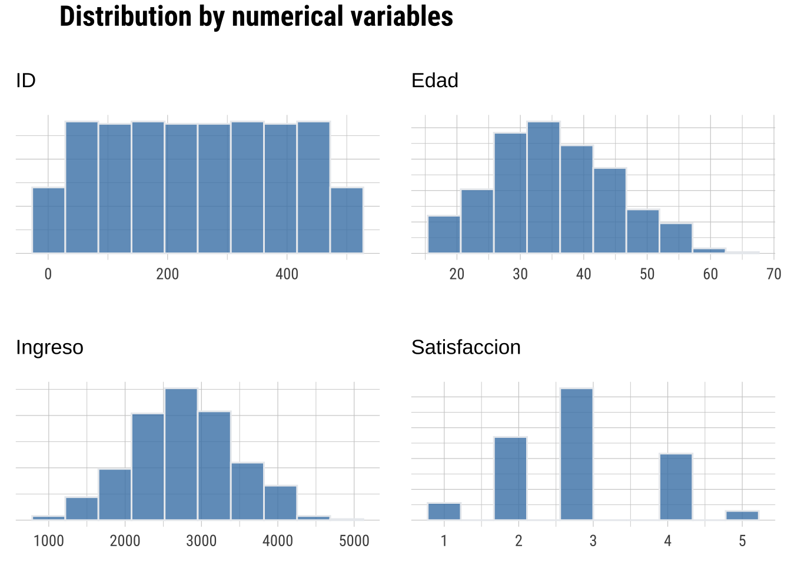
Podemos usar también plot_box_numeric() para ver valores atípicos y la distribución de la variables numéricas.
plot_box_numeric(encuesta)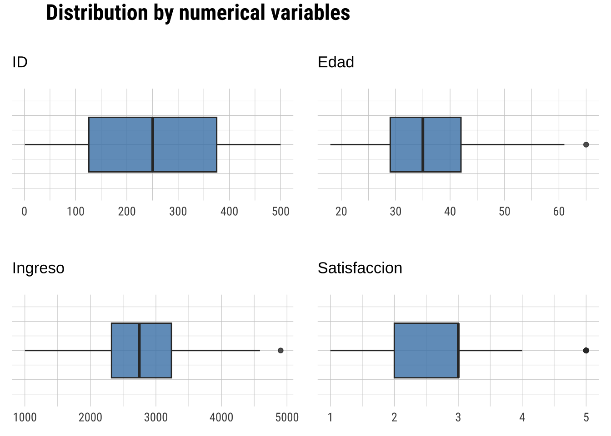
Podemos usar también plot_normality para evaluar la normalidad de cada variable numérica y sus tranformaciones.
plot_normality(encuesta)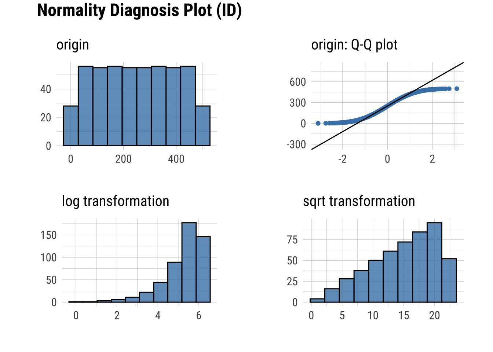
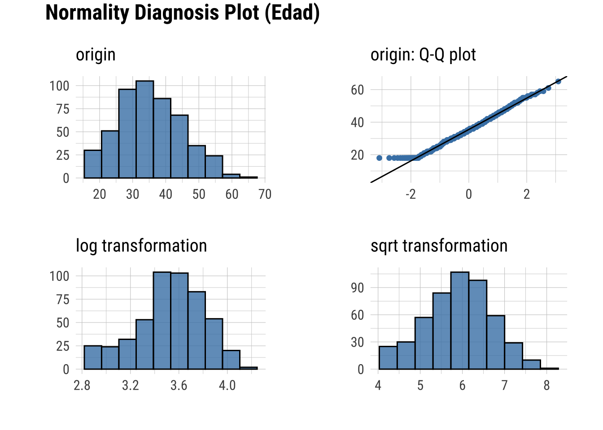
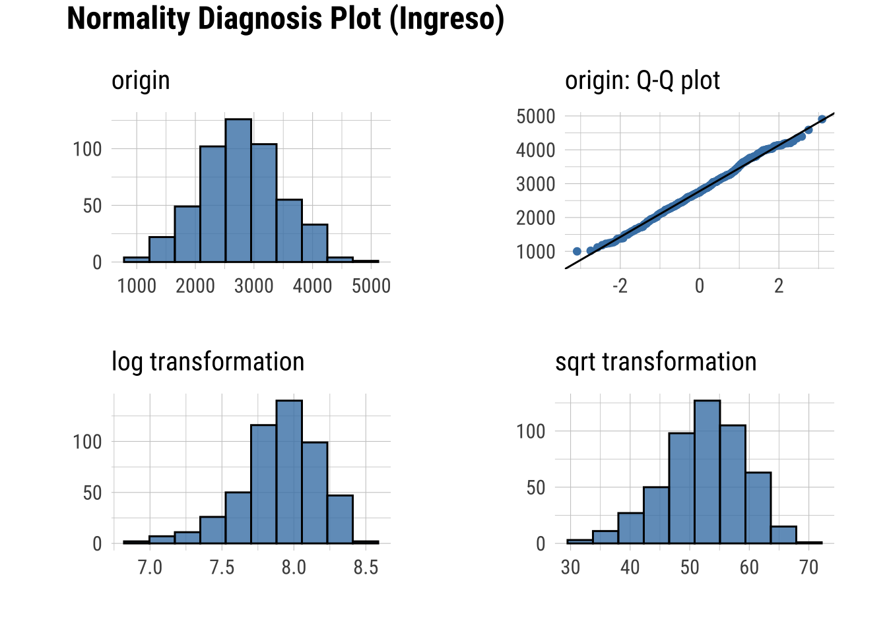
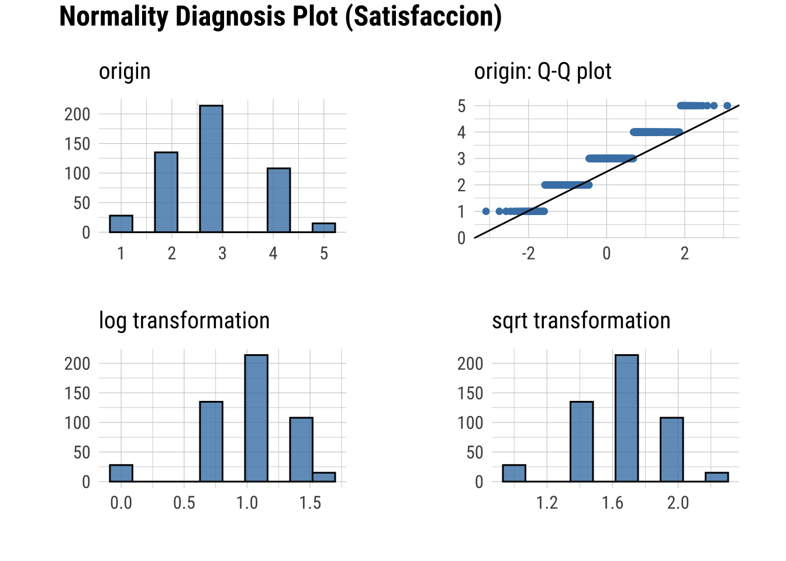
Podemos visualizar la frecuencia del variables categóricas con plot_bar_category().
plot_bar_category(encuesta)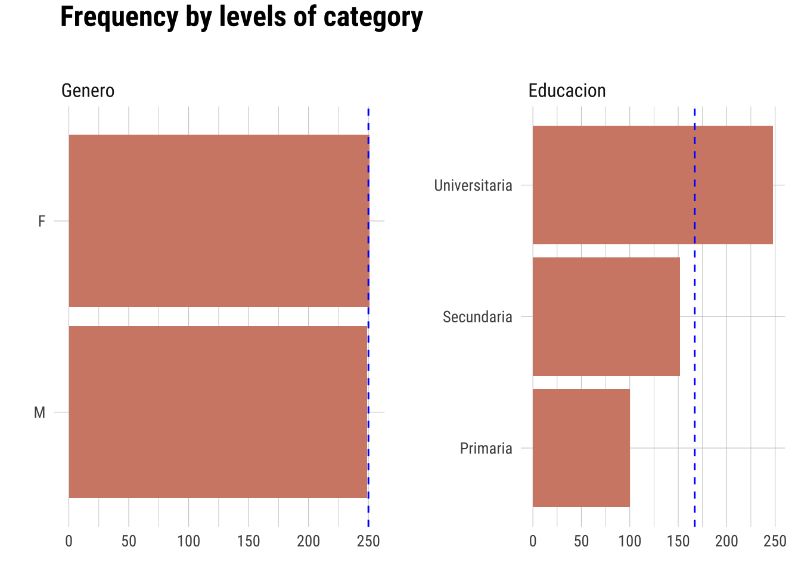
correlatePara examinar relaciones entre variables numéricas, podemos usar correlate().
# Matriz de correlaciones
encuesta %>%
select(Edad, Ingreso, Satisfaccion) %>%
correlate()# A tibble: 6 × 3
var1 var2 coef_corr
<fct> <fct> <dbl>
1 Ingreso Edad 0.682
2 Satisfaccion Edad 0.284
3 Edad Ingreso 0.682
4 Satisfaccion Ingreso 0.500
5 Edad Satisfaccion 0.284
6 Ingreso Satisfaccion 0.500Para visualizar las correlaciones, utilizamos plot_correlate():
# Gráfico de correlaciones
encuesta %>%
select(Edad, Ingreso, Satisfaccion) %>%
plot_correlate()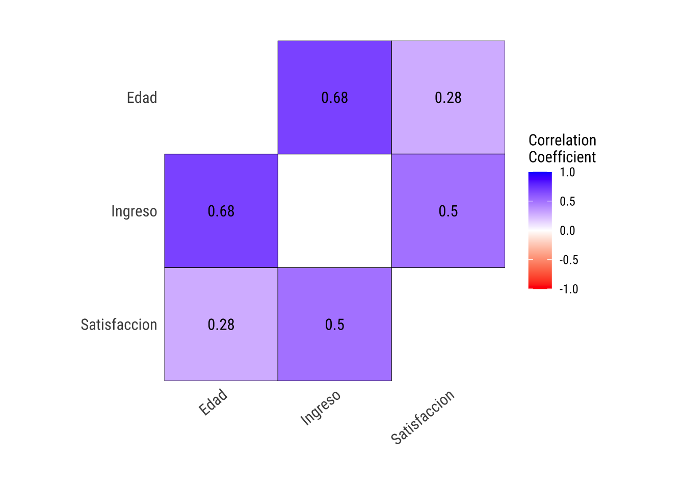